Computer Vision
De verschillende assignments met tekst en foto
Bij het vak computer vision gingen wij aan de slag met processing. Een programma waar ik zelf nog nooit van gehoord had. De bedoeling was dat wij de applicatie zouden installeren en vervolgens tijdens de workshop zelfstandig de opdrachten zouden maken. Met processing kunnen kunstenaars, ontwerpers, hobbyisten en studenten programmeren binnen een visuele context leren.
Assignment 1
1. Bij de eerste opdracht was het de bedoeling dat je 3 rondjes maakte. Deze moesten alle drie verschillende groottes bevatten, verschillende kleuren en met of zonder omlijningen. Hieronder zie je screenshots van mijn code en het resultaat van de code, namelijk de 3 rondjes met verschillende groottes en kleur.
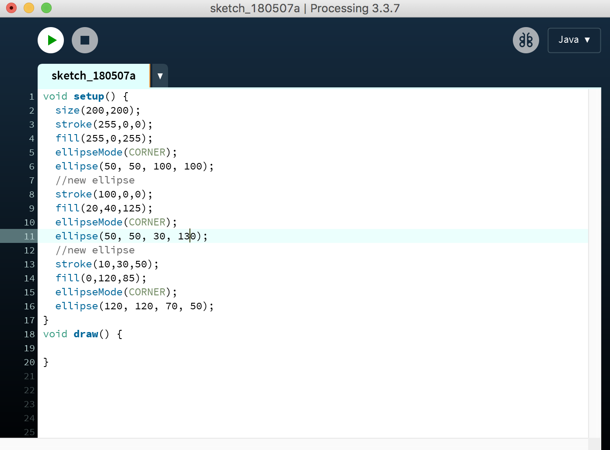 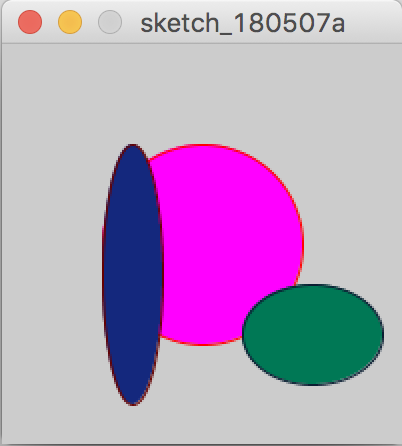Assignment 2
2. Bij de tweede opdracht was het de bedoeling dat er verschillende figuren gemaakt worden. Denk hierbij aan een lijn, driehoek, vierkant en een ruit. Ook deze objecten kregen allemaal verschillende kleuren en moesten allemaal een eigen locatie krijgen bij de uitvoer van de code. Hieronder zie je screenshots van mijn code en het resultaat van de code, namelijk 4 totaal verschillende figuren.
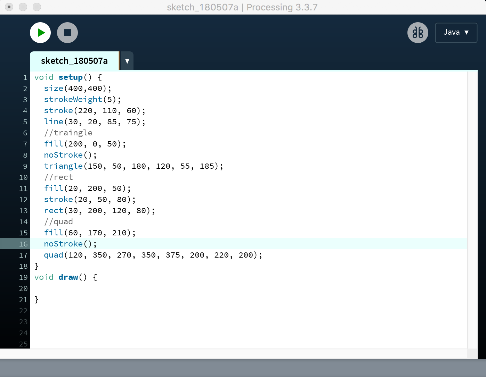 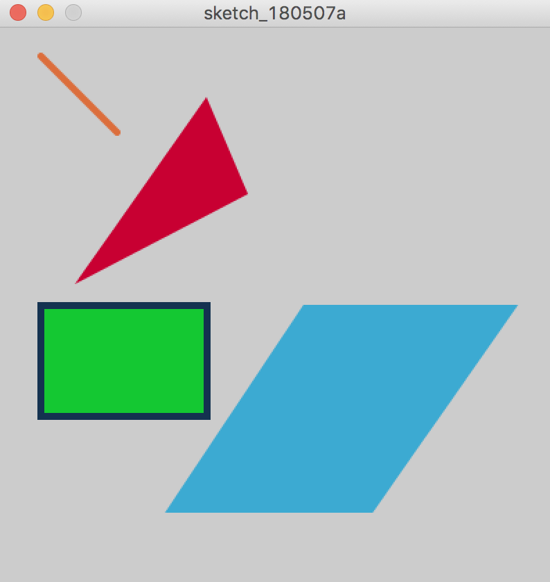Assignment 3
3. Bij de derde opdracht was het de bedoeling dat er minimaal 2 verschillende objecten gemaakt werden. Deze bevatten verschillende kleuren en moesten interactief zijn. Dit betekent dat de lijn aan de ene kant vast zat en de andere kant moest meebewegen met de muis. Dit vervolgens ook met een cirkel en een driehoek. Hieronder zie je screenshots van mijn code en het resultaat van de code, namelijk 3 objecten die meebewegen met de muis.
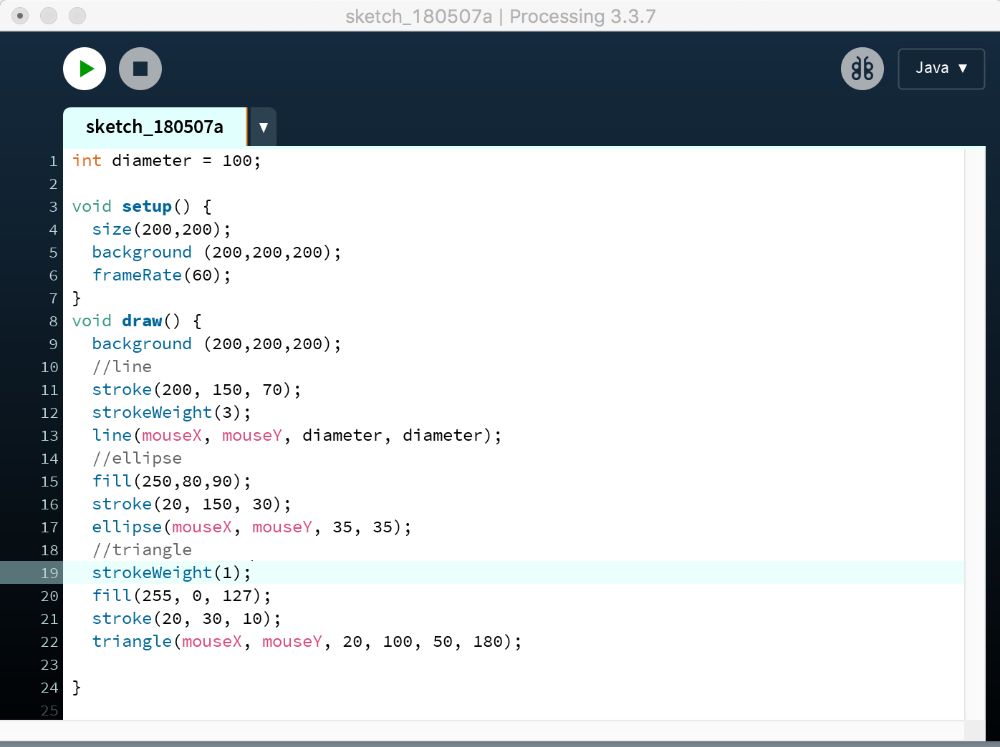 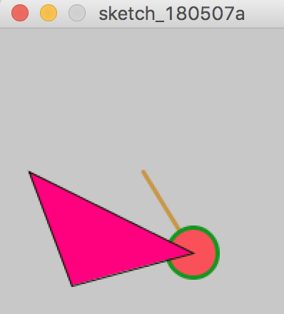Assignment CV1
4. De vierde opdracht had met iets heel anders te maken. Geen figuren of objecten meer, maar een basis die lag bij de webcam. Met de LiveCamTest in processing mochten wij gaan experimenteren. De bedoeling was om een code te schrijven die een gezicht zou herkennen en hieromheen een cirkel zou zetten. Hieronder zie je screenshots van mijn code en het resultaat van de code, namelijk 2 gezicht die herkend worden. Deze worden omringd met een groene cirkel.
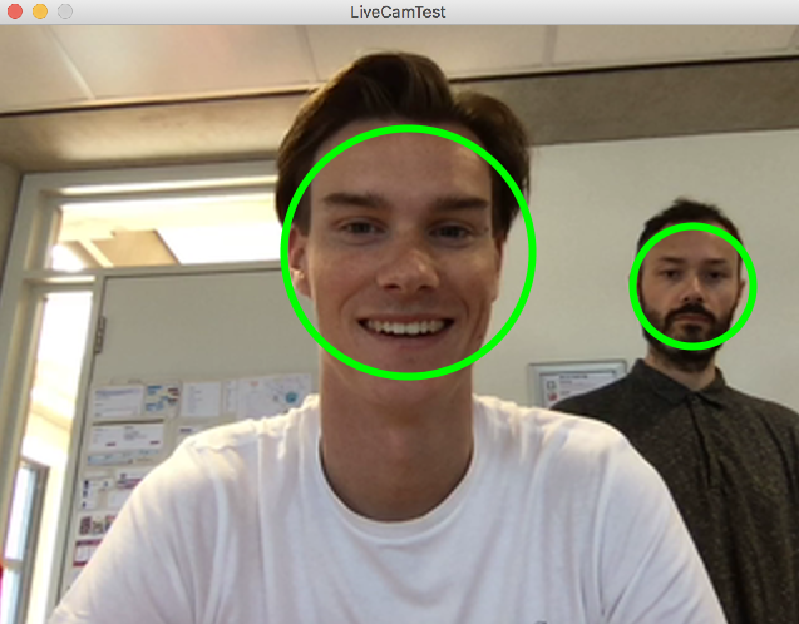 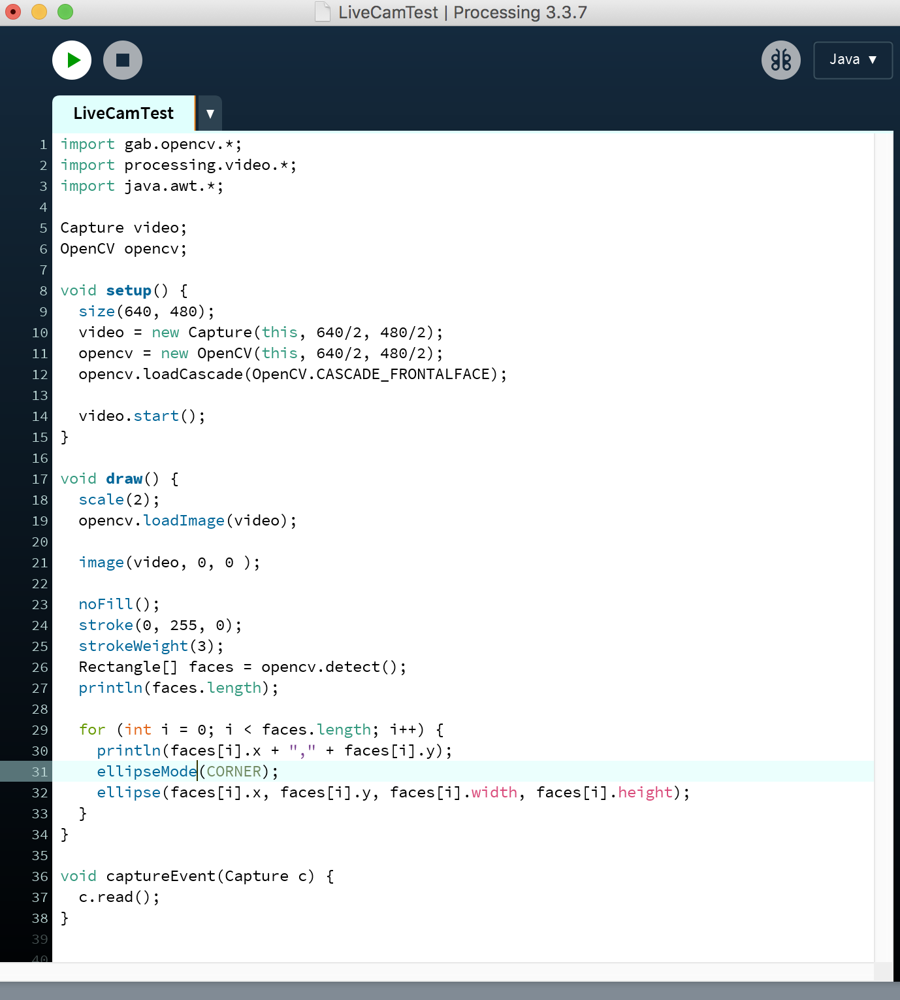Assignment CV2
5. Bij de vijfde opdracht mocht je zelf iets kiezen. Denk aan een zwarte balk voor de ogen projecteren of een rode cirkel als clown neus. Ik heb voor de 2e gekozen. Hieronder zie je screenshots van mijn code en het resultaat van de code, namelijk een rode cirkel op mijn neus en een groen randje eromheen.
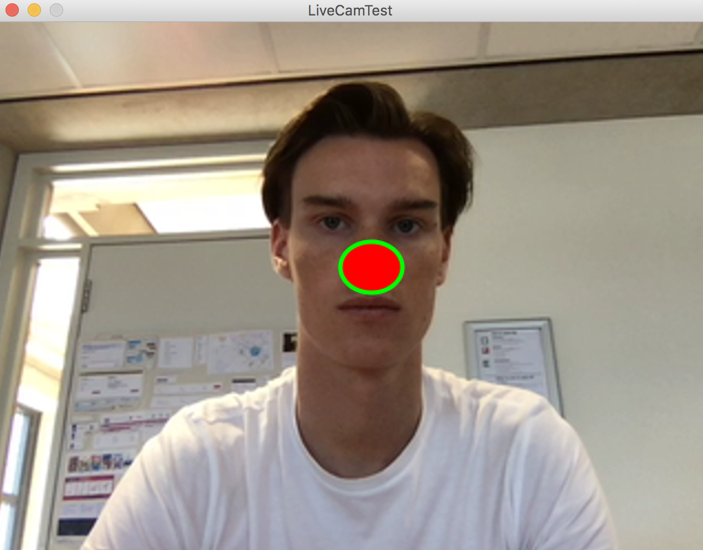 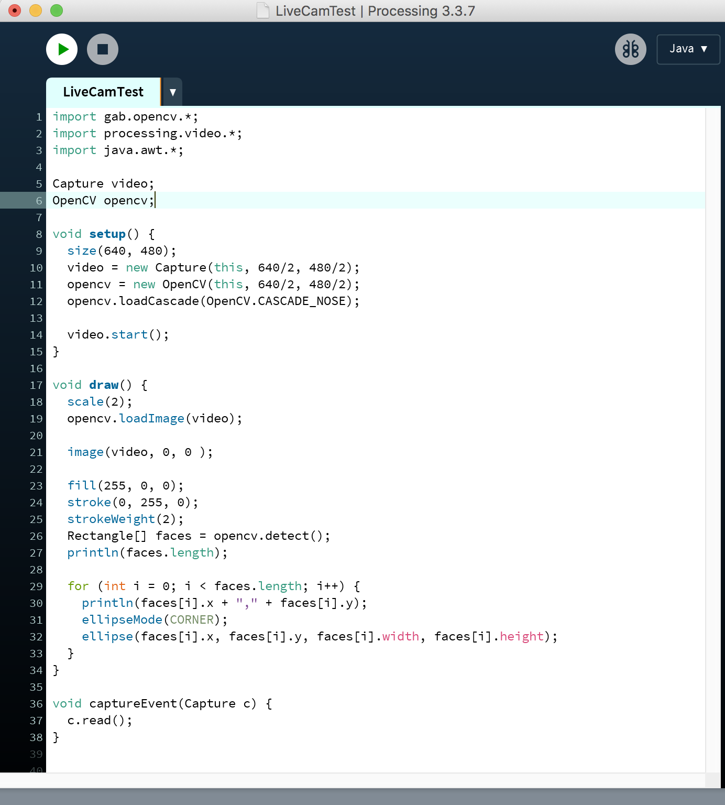Assignment CV3
6. Bij de laatste opdracht moesten wij een soort plug in downloaden. Degene die ik heb uitgevoerd heet: “OpenCVBrightestPointDetectionLiveCam”. En wat dit doet is dat bij het gebruik van de webcam een rondje wordt geprojecteerd op het lichtste plekje. Hieronder zie je screenshots van mijn code en het resultaat van de code, namelijk een rood rondje op een licht punt.
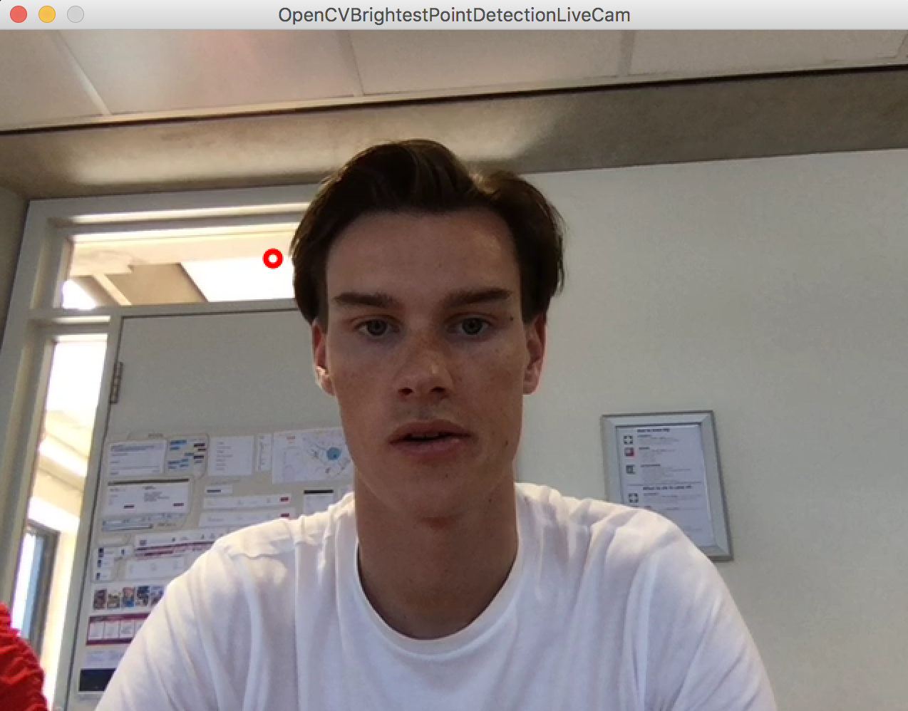 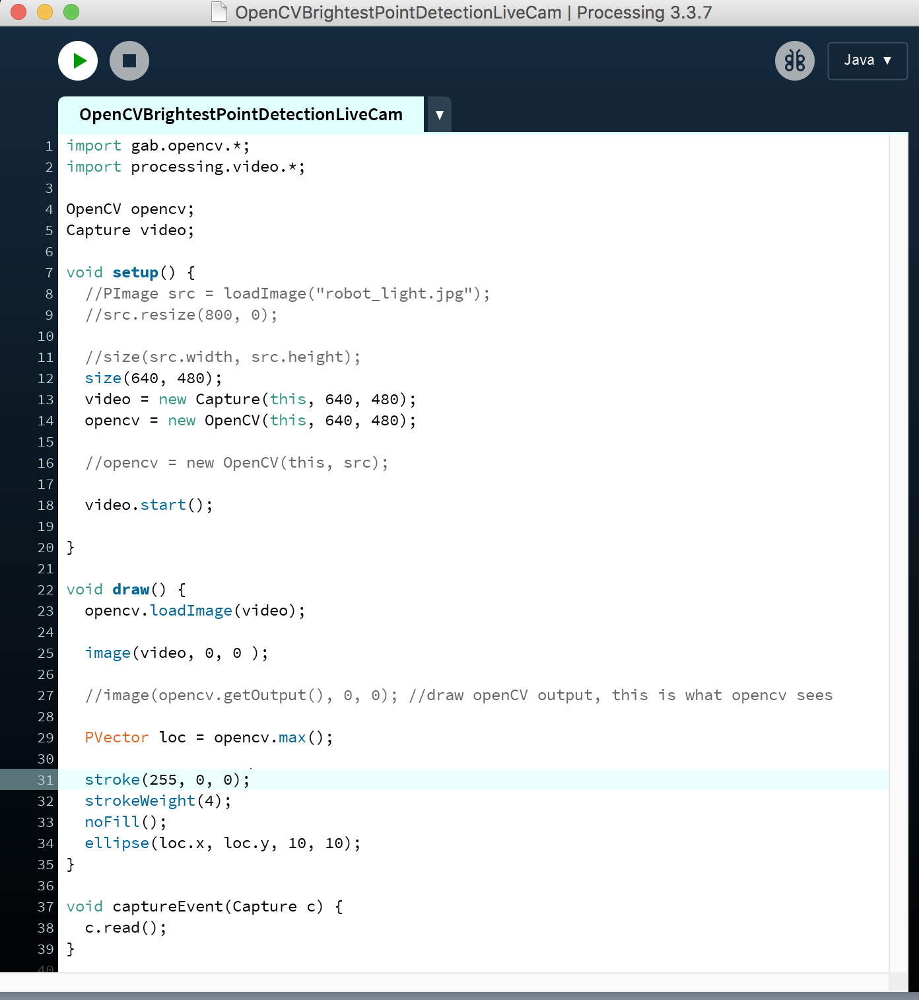